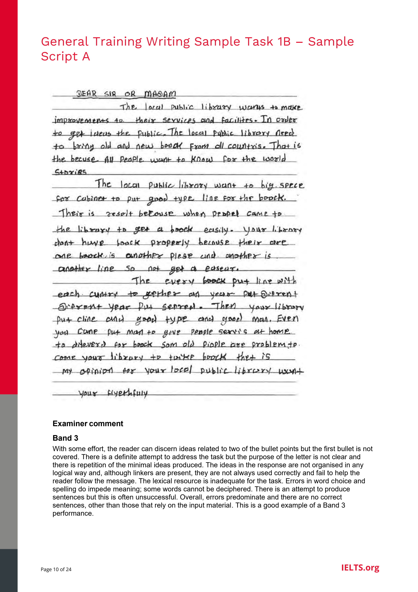

Public Library Improvement Letter
General Training Writing Task 1 requires candidates to write a letter suggesting changes to community facilities. Review the official prompt, analyze candidate Sample Script A, and understand the critical mistakes that lead to a Band 3 score.
- describe what you like about the library
- say what you don’t like
- make suggestions for improvements

"With some effort, the reader can discern ideas related to two of the bullet points but the first bullet is not covered. There is a definite attempt to address the task but the purpose of the letter is not clear and there is repetition of the minimal ideas produced. The ideas in the response are not organised in any logical way and, although linkers are present, they are not always used correctly and fail to help the reader follow the message. The lexical resource is inadequate for the task. Errors in word choice and spelling do impede meaning; some words cannot be deciphered. There is an attempt to produce sentences but this is often unsuccessful. Overall, errors predominate and there are no correct sentences, other than those that rely on the input material. This is a good example of a Band 3 performance."